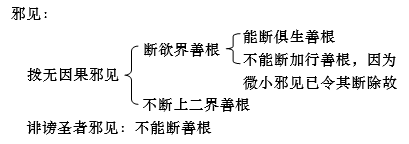

第四品分别业品问答题
373、形形色色的世间界是有哪两种业所生？
答：形形色色的世界是由思业与思所作业两种所产生的。
374、什么是思业、思所作业？有何分类？
答：思业是指与意识相应并能起动对境身语现行的心所，因此属于意业，思所作业是指身业与语业，因为是由思维引发的缘故。
375、什么是身有表业和语有表业，对此有部与经部有何不同观点，自宗如何安立？
答：有部：
身有表业：由自己的思心所引发的一种形状，并且通过此形状自己的发心能被他众了知。
语有表业：通过自己发心而引出的任何语言，能使他者了知自己的等起。
经部：
身有表业：业为心的习气，依身体完成之业是身有表业。
语有表业：业为心的习气，依语言完成之业是语有表业。
经部驳斥有部许身有表业为形色：
（1）成二所取：若身有表业是形色，则因为是色而成为眼识所取，因为是形，而成为身根所取，以手摸可知其长短方圆等，所以有一色境为二根所取的过失，为理所不许。
（2）尘无有：若形色实有，则组成形色的极微也应为长等相，而实际上并没有有形象的极微。可见形色是由显色的安布差别而形成的，并无真正实有的形色。由此经部承许业为心的习气，而身语帮助完成的业是身语有表业。
俱舍自宗承许业非无情法，应于心上安立，非为眼识的对境。
376、犊子部既然不承认四法印，那么为何属于佛教徒？
答：犊子部不承认四法印，如不承认诸行无常，而认为粗大法无常，细微法有常，其不承许诸法无我，而承许有不可思议的我存在，由此可见其见解属外道，但因其皈依佛陀并行持佛教行为，故而属于佛教徒。
377、依靠何教证说明无表业存在之理，对此有部与经部之间有何不同观点？
答：有部列出八个教证证明无表业存在，经部则针对指出无表业不实有。
有部：
（1）经中宣说“有见有对色，无见有对色，无见无对色”，就是指无表业。
（2）“无垢色”是指无表色。
（3）“实生福德恒时增上”：实生福德就是指无表业，不是指有表业与心，若是指有表业与心，则于睡眠是不会产生及增上。
（4）“自己未做之业道等”：如令别人杀生，自己未做杀生，但亦有罪业生，若无无表业存在，则别人杀生，自己不应有罪业，然而自己定有罪业，则证明有无表业存在。
（5）见道入定阶段亦具八正道：此时所具有的正语与正业乃身语业，然而入定时没有身语之有表业，所以入定阶段应具备无表业，即正语正业应为无表业。
（6）“比丘心思他散时也具戒”证明别解脱无表存在。
（7）“戒如过河之桥梁”。
（8）“法处所摄色”：法处所摄之色法唯是指无表色，因此说存在。
经部：
（1）“无见无对色”是指以等持力显现的色法，是瑜伽士定中所现之色法，并非是指无表色。
（2）“无垢色”是指无漏等持所现之色法。
（3）实生福德增上不是指无表业，乃是一种习气，此种习气使相续改变，于来世定生异熟果报。
（4）此处这种差遣他人造业乃指于自相续中种下了一种习气，以致将来定得果报，所以并非无表业。
（5）“八正道”乃指后得位时不会入邪语而获得趋入于正语之因的无漏法，即入定时具八正道是指获得一种力量，而于后得位时不会入邪语等。
（6）这里是指先依仪轨受戒之心来守戒，“正念”一直在守护，在散乱时，此受戒之心并未失去，而是以隐藏的方式存在。
（7）仅是指知惭而忆念承诺不造罪业从而不做破戒之事的意思。
（8）此色当然也是指以等持力而生的显现色法非指无表色。
378、什么是七种实生福德和七种非实生福德？
答：七种实生福德：会产生实有福德的业（供养有四个，布施有三个）。“供养经殿堂，坐垫生活资，护理骤病者，劣境是布施，即七实生福。”
（1）供养经堂（讲经说法处）；
（2）供养殿堂（即佛堂，摆放佛像处）；
（3）供养僧众坐垫；
（4）供养生活资具；
（5）布施护理病人者；
（6）布施骤病者，即突然发病的人；
（7）布施处于劣境的人。
七种非实生福德：“于佛住预去，入途至见闻，听法与持教，欢喜生信心，即七非实福。”
（8）于佛的住处见闻佛陀；
（9）于佛准备前往别处时见闻佛陀；
（10）于佛趋入于途中时见闻佛陀；
（11）于佛到达目的地时见闻佛陀；
（12）听法；
（13）受持教法（背诵、讲考、笔考、传法等）；
（14）于此上善举生欢喜心及信心。
379、比喻说明无表色在欲界于自己同时或非时产生之理？
答：属于欲界的戒、恶戒、中戒所摄的所有无表色是由第一刹那与自己同时的四大种产生，这是指能产生本体的大种，就像轮子在地上转动要用手来推动一样。
此后的无表业是由过去的大种产生，因为身体群体中具有的现在所有大种，只能作为已生之法（已生无表色）存在的依处，如同轮子转动之地一样。
380、无表色以自地大种产生还是以他地大种生？
答：有漏的身语有表无表业是由自地大种产生，欲界的身语二业唯是欲界大种所造，不是由他地大种作为因而产生的，原因是被异地的爱所隔断。如欲界的身语业不能由色界大种为因。
无漏无表业由自己转生的所依之大种中产生，因为无漏法不属三界，所以没有无漏大种。也不存在以自地大种所生的说法。
381、无表色本体之三个特点是什么？
答：无表色本体的三个特色：
（1）无执受：无表色是无对法，无法对其作利害而生觉受，所以非为苦乐之所依；
（2）等流生：除了初圣者无漏刹那所俱生无表之外，余皆同类因生，故是等流生；
（3）有记法：为众生相续所摄故。
382、有漏无表业和无漏无表业有何不同因？
答：有漏无表业分欲界无表和禅定无表：
（1）欲界无表的因大种：
等流生：同类因生故；
有执受：由现在身体中大种产生，能被心、心所执而生觉受；
有七种不同大种：此是就欲界的七种身语所断而言的。身三、语四生戒之心为七，故大种亦有不同七种。
（2）禅定无表的因大种：
无执受：禅定心不以爱执此无表大种为现在自体而生觉受；
长养生：依靠等持大种可得以增长；
同一大种：生戒的心无有异体，大种也无有不同。
无漏无表与禅定无表因大种的情况相同。
383、有表业和无表业是善、不善、无记中的哪些？
答：无表业：通善与不善性，不通无记，因为无记心弱不起无表。
有表业：从等起方面来说具有善、不善、无记三种。
思业：以相应的方式具有三种。
384、有表业、无表业三界中怎样存在的？可分哪几类？
答：欲界：意业——善、恶、无记法
有表业——善、恶，无有覆。身边二见相应之有覆是见断、内观故，不等起有表。
无表业——善、恶
色界：意业——善、无记（无不善）
有表业——善、有覆（初禅有有覆无记有表业，二禅以上无，无寻伺故）
无表业——善（无不善）
无色界：意业——善、无记（无不善）
有表业——无
无表业——无
归纳有表业、无表业可分三类：
（1）欲界、初禅：有表、无表皆具足。
（2）色界二禅以上：无表有，有表无（无寻无伺故，无等起心）。
（3）无色界：有表、无表皆无。
385、什么是胜义善等十二种善、不善、无记法？
答：善：胜义善、本性善、相应善、等起善。
不善：胜义不善、本性不善、相应不善、等起不善。
无记：胜义无记、本性无记、相应无记、等起无记。
386、以比喻说明四种善、不善、无记的本体。
答：四种善：
（1）胜义善：解脱是胜义善，远离一切痛苦最为安乐故。
喻：人本身无病就称安乐。
（2）本性善：三根本善（无贪、无嗔、无痴）及知惭有愧是本性善，不观待他法本身即善。
喻：如对症之药。
（3）相应善：与本性善相应的所有心、心所是相应善。因相应善法而立为善。
喻：如与对症之药配合之饮料。
（4）等起善：以善之发心引出的身语之事。
喻：如与对症之药配合之饮料中出的乳汁。
（药：喻善之发心；所出乳汁：喻身语之事。）
四种不善：
（1）胜义不善：轮回是胜义不善，因被痛苦所缚最不快乐故。喻：如病痛一般。（胜义不善与十不善业有差别，胜义不善指三界皆不善；十不善唯欲界有，而色、无色界中无。）
（2）本性不善：三根本不善（贪嗔痴）与无惭无愧是本性不善。
喻：如不对症之药。
（3）相应不善：与不善相应之所有心、心所，以相应不善而立为不善法。
喻：如与不对症之药配合的饮料。
（4）等起不善：以不善发心引起的身语之业，以发心不善而立为不善之故。
喻：如与不对症之药配合的饮料中出的乳汁一样。
（不对症之药：喻不善发心；所出乳汁：喻身语之业。）
四种无记法：
（1）胜义无记法：非抉择灭、虚空（无为）。
（2）本性无记法：器世界、五根、化心、工巧威仪。
（3）相应无记法：与无记法相应之心与心所。
（4）等起无记法：无记心等而引起的身语业。
387、什么叫做因时等起和彼时等起？
答：因时等起：指最初发心，如加行一样，能为因而引发身语二业；
彼时等起：指正在行事时的心犹如正行，即身语正作业时同时俱有之心。
388、怎样分析是否两种等起之四种分类？
答：能等起者，唯是在说心识，心识分六，此六种识从因时等起与彼时等起上分类有四：
（1）唯是因时等起：见所断识。即与见断惑相应之意识，此见断识可以为远因而帮助引发身语二业，但身语二业正造作时，此识不会同时具有，因为身语正造作时之心识是修断，见断识不存在，故见断识唯因时等起。
（2）唯是彼时等起：五根识。五根识无有分别，则不会引发身语二业，即非因时等起；五根识是修断，是外观之法，于身语二业正行事时同时具有，故是彼时等起。（外观之法，观于外在身语造作，而为之等起，即此能等起之心与身语二业不相分离。）
（3）既是因时等起又是彼时等起：修断之意识，意识通见、修、非，属修断烦恼相应之意识，因为有分别故，能为初心而引发身语二业，故是因时等起；是外观之法，能为正心而与身语造作同时具有，故是彼时等起。
（4）非二：无漏识与异熟生心。无漏识唯与无漏禅定俱生，不能发业，故不是此二等起；异熟生心，前业所感，不观待加行任运而起，也不能发业，故亦不具二等起之义。
389、因时等起是善等，彼时等起是怎样？而佛陀呢？对此大小乘有何不同观点？
答：初心善，正心有善、不善、无记；
初心不善，正心有善、不善、无记；
初心无记，正心有善、不善、无记。
关于佛陀：
《俱舍论》认为：初心善，正心善；初心无记，正心无记或善；没有初心善，正心无记，因为佛之心不会由胜而劣。
大众部认为：初心善，正心善，没有不善与无记；
经部：佛陀恒时利他，无出定入定的区别。
390、无表色分哪几种？无表色具足时，有表色也具足吗？
答：无表色分三种：
戒：能遮止恶戒相续；
恶戒：如屠夫长期造不善是恶戒；
中戒：暂时受持二戒中任一种。
无表色具足时则一直存在，而有表色偶尔出现，所以无表色具足时，有表色不一定具足，戒律本来就具足有表色，唯说是无表色，是就主要而言的。
391、什么叫做戒、恶戒、中戒？
答：戒：能遮止恶戒相续是戒。
恶戒：如屠夫长期造不善业是恶戒。
中戒：暂时受持二戒其中之一的是中戒。
392、戒律分哪几种，各自法相是什么？
答：戒律分别解脱戒、禅定戒和无漏戒。
别解脱戒：包括在欲界中的一种出离戒。
禅定戒：属于色界的一种善法戒。
无漏戒：无漏法之戒律。
393、什么是八种别解脱戒？怎样归纳为四种？
答：八种别解脱戒：比丘戒、比丘尼戒、正学女戒、沙弥戒、沙弥尼戒、男居士戒、女居士戒、斋戒。
八种归纳为四种：
（1）比丘、比丘尼戒；（2）正学女、沙弥、沙弥尼戒；
（3）优婆塞、优婆夷戒；（4）斋戒。
可以如此归纳是因为如果有男女变性亦不会舍戒体，只是名称改变而已。
394、居士戒、沙弥戒、比丘戒是一体还是他体？自宗如何承认？
答：三戒他体：因为还比丘戒后沙弥戒仍旧可以存在。如果三戒一体，前二戒则包括于比丘一戒中，若舍比丘戒则三戒皆舍。实际上并非如此，故三戒是他体。然而三戒并不相违，可于一身中同时存在。
395、为什么叫居士、沙弥、比丘呢？他们所守护的戒条有多少？斋戒为什么不分男女戒？
答：居士：应做比丘、比丘尼的仆人而承侍，故称居士。
居士戒：在有生之年受断除四根本罪与饮酒五所断。
沙弥：勤勤恳恳为上师做事，叫沙弥。
沙弥戒：有生之年断除十种所断，即五戒、歌舞等、花鬘等、高广大床、过午进食、取金银。
比丘：近圆，圆是指远离轮回所有损害的涅槃，与之趋近，因此称近圆。
比丘戒：在有生之年断除身语的一切所断即是比丘戒，也叫近圆戒。
因为斋戒是一日的戒律，时间短暂所以不分男女。
396、戒律有什么不同名称？
答：戒律的不同名称有律仪、妙行、业、戒律、别解脱、业道。
律仪：能消除破戒的酷热获得清凉，故称律仪。
妙行：蒙受圣者的赞叹，故称妙行。
业：是所作的自性，称为业。
戒律：禁止身语的非事，故称戒律。
别解脱：得戒第一刹那的有表色与无表色开始脱离恶业，故称别解脱。
业道：得戒前之思是趋入之因，而称业；初刹那之戒体是彼业的途径而称为道。故初刹那戒体名别解脱，亦名业道。
397、戒律在何情况下是有表色或无表色？藏地对此有何不同观点？
答：戒律是有表色：在开始受戒时，顶礼、诵戒之仪轨为身语之有表；在持戒的中间阶段、解制、诵戒、磕头或不去有虫之处等皆是身语有表。身语有表，有时存在，有时不存在。
戒律是无表色：于受戒时之刹那，通过发心及上师的表示而获得戒律；获戒律后，一直到未舍戒之前，无表色一直存在。
藏地对此的不同观点：
（1）萨迦班智达于《分析三戒论》中说：“声闻戒律无表色”，是指无表色占主要位置，并一直存在，并非不承认是有表色，而只因有表色是有时存在（如在开始存在等）并非主要，故不说。
（2）《俱舍论》声闻戒律是有表色与无表色，即是指最初戒体既是有表又是无表。
398、哪些众生具别解脱戒、禅定戒、无漏戒？他们恒时都具足吗？
答：（1）具别解脱戒的补特伽罗有七种：比丘、比丘尼、正学女、沙弥、沙弥尼、男居士、女居士。
（2）具有禅定所生等持者，具足禅定戒。
（3）圣者有情即学与无学具无漏戒。
别解脱戒不是随心戒，散乱无心时亦具足，直至舍戒前皆具足；禅定戒、无漏戒是随心戒，皆以入定时具戒，出定时不具。
399、为什么叫两种随心戒或断道？什么叫未至定？分几种？
答：禅定戒与无漏戒是随心戒，因为他们随着心是否存在而变化，并依赖入定的缘故。
断道：依一禅未至定的九个无间道称断道。因为二断除之戒于无间道生并断欲界烦恼及恶戒故。
未至定有八种，色界四种禅定、无色界四种禅定的根本禅定之前各有一未至定。
400、什么叫意戒和根戒？它们依何而言，有何教证？根戒怎样具足正知正念？
答：意戒：正知正念从属于意识而产生，是意戒。
根戒：正知正念随从根识而产生的是根戒。
意戒与根戒都依正知正念而立。
教证：经中说：“身之戒善妙，语之戒善妙，意之戒善妙……”、“眼根以戒守护而住”。
根戒具足正知正念，是首先意识起作用，后于根识有守护作用，实际上根识无分别作用，应只具足一部分正知正念。
401、怎样具足禅定戒、无漏戒、戒、恶戒之无表色？
答：守别解脱戒者：未舍戒之前具现在无表色。
初刹那：具现在无表；
初刹那后：具过去无表及现在无表色。
守恶戒者：未出现舍因之前，具现在无表色。
初刹那：具现在无表；
初刹那后：具过去无表及现在无表。
具禅定戒者：第一刹那时起恒具过去未来无表色，具有过去无表色，是因为过去生修定所俱生的无表色虽已失掉，现在入定初刹那时又重新再得到了。
圣者：于无漏第一刹那时，只具未来无表色，不具过去无表色，因为以前从未生起过这样的无漏戒之故。第二刹那起恒具过去无表、未来无表。
有漏禅定、无漏定入定时具足二戒现在无表色，出定时则不具备，因为此二戒是随心戒。
402、守戒者具有不善无表色，守恶戒者具有善无表的情况存在吗？具多久？
答：守戒者可以具有不善无表色：如守戒者，在其杀生时即具恶无表色，乃至未舍杀心前皆具恶无表色。
守恶戒者亦可具善无表色：如守恶戒者，顶礼等时具有善无表色，乃至未舍此善心前善无表色都存在。
403、守戒、恶戒、中戒时，有表色是怎样具足的？有覆无覆无记法也是如此吗？
答：守戒、恶戒、中戒者之身语有表色：
（1）具现在有表色：身语于第一刹那造作乃至未舍之间皆具现在有表色；
（2）具过去有表色：第一刹那后至未舍有表色间皆具过去有表色；
（3）无未来有表色：有表色非随心色。
以上是说善恶有表如何具足。有覆与无覆无记法只是具足现在有表色，不具未来有表色，亦不具过去有表色，因为有表色力量薄弱，不能与过去得绳相连。
404、恶戒有哪些不同名称？为何如此称呼呢？
答：恶戒有五个不同名称：恶戒、恶行、破戒、业、业道。
恶戒：恶行不是戒律故称恶戒。
恶行：由于受到圣者呵责，故称恶行。
破戒：因为是戒律的违品故称破戒。
业：因为是所作自性故称业。
业道：初刹那戒体是彼业之途径，是正行和根本故称业道。
405、具有表色不具无表色等有哪四种类别？
答：（1）具有表色而不具无表色：以前不具无表而守中戒者，若中戒不能起无表色（心弱），则只能具有表色，而不具无表；
（2）不具有表色而具无表色：圣者已舍前世有表，而后世有表未至（如入胎），则具无漏无表，不具有表；
（3）既具有表色又具无表色：如受戒者；
（4）二皆不具：如无色界众生。
406、禅定戒与无漏戒的得法是怎样的？
答：禅定戒：依未至定与正禅而得，因为与彼等一起生之故。
无漏戒：依圣者的无漏道而获得。因是具有无漏静虑六地之一。
407、怎样能获得别解脱戒？注释中所论述的十种近圆戒是什么？
答：七种别解脱戒从亲教师等他人有表色中得。
十种近圆戒：
①佛与②缘觉仅依证得自然智慧而生起比丘戒；
③五比丘以趋入真谛而得近圆；
④妙誉尊者等依善来而得（以佛称“善来”而得）；
⑤大迦叶承认佛为导师而得近圆；
⑥善施由答问心喜而得近圆；
⑦众生主母等由宣说八难断法而得近圆；
⑧供施女依僧传言而得近圆；
⑨中土十人，边地五人具行白四羯磨而得近圆；
⑩六十善群比丘由许三皈依而得近圆。
408、斋戒可以受一日，而恶戒中为什么没有一日之戒呢？《自释》中有何解释？
答：有部：只有尽寿造恶业时得恶戒，无一日之恶戒。因无此受法。恶戒为智者所呵责，且既无人授此戒，亦无人去受；
经部：一日恶戒无法受，一生恶戒同样不可。一日斋戒可以受，假设有此授戒师，一日恶戒未尝不可。然而实际上就如同戒律并无别的什么实体叫无表色，恶戒亦应该没有实体，只不过想造恶的不善意乐相续不舍而叫恶戒。由此看，一日斋戒存在，亦可有一日恶戒，因为并无理证违害故，只不过佛未宣说罢了。
409、从何处、何者、何种方式受近住戒？
答：受戒者较传戒者低坐合掌，跟随传戒者所说而重复三遍，不佩带华丽装饰品（平常带者也可以，为了法会而带者则不可以），于第二天日出之前，从比丘乃至具戒居士处受，早餐前受完。
410、斋戒有哪八条？未皈依者有斋戒吗？
答：斋戒八条：（1）不杀生；（2）不偷盗；（3）不邪淫；
（4）不妄语；（5）不饮酒；（6）不歌舞花鬘；
（7）不坐高广大床；（8）不非时食。
未皈依者是没有斋戒的。
411、若仅皈依能具居士戒吗？在得居士戒方面，经部论师与克什米尔论师有何不同观点？
答：在得居士戒方面：
有部：先皈依再承诺为居士，即得居士戒体，三皈受完，即可发五戒，以承诺而成居士。
经部：如果自称为居士已为居士，再宣说学处则无意义。
有部：无有这样的过失，居士戒如比丘戒，戒于自誓时已得，宣说学处只是为令了知。
412、居士五戒中只行持一分戒等，怎么会合理？对此，经部、有部有何不同说法？
答：有部：在初发心受戒时，五戒可以具受，之后随自己能力而行持一分等戒。
经部：受几分戒，则于上师前说受几条。随受多少，皆得发戒，否则不合理。
413、守一分戒、多分戒等居士所守戒条方面，《俱舍论》与《毗奈耶经》有什么不同说法？实际上我们怎么行持呢？
答：《大名经》及《俱舍论》说一分戒最主要的前提是不杀生，在此基础上才受其他戒；《毗奈耶经》认为四根本戒随便可为一分戒。
以上经论均要求戒酒，不戒酒则会失坏学处。
从实际情况看，（本来要求最低也是不杀生、不饮酒）若实在不能守饮酒戒，为令其种善根故，也可为其授不杀生戒令其成居士。
414、本论如何安立三宝？佛身非皈依处，出佛身血为何犯五无间罪？
答：皈依佛：指皈依能成佛之无学道，即尽智、无生智；并非指皈依佛之色身，因其与凡夫无异故，并且是指皈依所有佛；
皈依僧：有学、无学的僧众；
皈依法：即皈依涅槃灭谛。
有部承许佛身非皈依处，但是若伤害佛身则对法身有害，所以，以害心出佛身血即犯五无间罪。
415、请以教证说明皈依三宝的殊胜功德。
答：《自释》中引经证言：如世尊言：“众人怖所逼，多皈依诸山，园苑及丛林，孤树制多等。此皈依非胜，此皈依非尊，不因此皈依，能解脱众苦。诸有皈依佛，及皈依法僧，于四圣谛中，恒以慧观察。知苦知苦集，知永超众苦，知八支圣道，趣安隐涅槃。此皈依最胜，此皈依最尊，必因此皈依，能解脱众苦。”
416、为什么对居士制定不邪淫、不妄语、佛制罪不饮酒的戒条呢？
答：对居士制定不邪淫：因为邪淫是侮辱他人妻，是堕落之因，极受谴责，而且在家人易断邪淫，而不易断非梵行，故制定不邪淫；
制定不妄语：若违越学处，则可能不承认，以不妄语可以对此进行遮止，即令其说诚实语；
制定不饮酒：以此可以守护其他学处，因为若饮酒，其他戒很难防护。
417、别解脱戒和禅定戒、无漏戒依什么而获得？
答：别解脱戒之获得：
（1）一切：由别解脱戒分别断除不善业的所有加行、正行、后行而获得。
如杀牦牛：加行：准备刀具等，并开始杀牛至其未命绝；
正行：牛命绝时；
后行：剥牛皮、吃牛肉或卖等。
（2）依二者：依靠断除自性罪、佛制罪二者之基众生与非众生而获得。
依自性罪之基 众生：如杀生；
非众生：如盗金。
依佛制罪之基 众生：如接触女人；
非众生：如割草。
（3）现众得：依现在众生得，非依过去、未来众生而得。
禅定戒与无漏戒的获得：
①依靠断除不善业之正行而获得，非依加行、后行而得；
②依靠断自性罪之正行而得，非依断加行、后行而得；非依断佛制罪而得，未承诺断佛制罪的缘故。
③依三世一切时得，依赖三世众生（及处）得，禅定戒、无漏戒随心转，心可缘三世，所以戒也可由三世得。
418、依众生而得之戒，是否观待众生数目、受戒功德，而戒体亦有变化？若发愿戒杀不能杀的众生呢？为什么？
答：关于依众生而得之别解脱戒，有二种说法：
一说：由普于一切有情而发起不损害一切有情生命的增上意乐而得戒；
二说：以戒杀为例，于能杀的境发心不杀而得戒，于不能杀的境不得戒。
论主同意一说，即于一切有情总发律仪是善妙的，并破二说有增有减的过失。如于释迦佛时代发愿不杀的所生戒体要大，由于在佛的教法下有众生已入涅槃，所以弥勒佛时代则不能以这已入涅槃的圣者为境而受戒，所以戒体应当较释迦佛时小，而此种说法是有过失的。因为三世佛的别解脱戒都是缘一切众生而发的。假设现在已入涅槃的有情于弥勒佛时还在的话，于弥勒佛时依然可以依之而发别解脱戒。所以说所依众生数目的多少虽然有区别，但戒体前后并无差别，都是从一切有情处总发而得戒。
同时，于不能杀的众生发愿，同样具有功德。因为受戒者由于对一切有情有善意乐的缘故而得别解脱戒。所以说，并没有于少分有情不缘可以生戒体的道理。
419、戒律和恶戒是依什么有情、支分、因缘而获得的？
答：欲界别解脱戒：
（1）有情：依一切有情众生而获得；
（2）支分：比丘戒从所有七所断中得；
其他戒（斋戒、沙弥戒、居士戒）从身语四所断中得（身三、语一）。
（3）因：a、三根本善（无贪、无嗔、无痴）为因，三者同时并存而获得；
b、三根本善不并存，而是从任意一个等起中得，并以下、中、上品等起三者为因。
恶戒：
（1）有情：依一切有情众生而得；
（2）支分：从所有业道中得（具足七支）（是从恶戒能损一切善而说的）；
（3）因：不是由所有因得，三根本不善（贪、嗔、痴）不会同时产生故，三种等起也不会共生。
420、《自释》中所宣说的受恶戒的众生有哪几类？
答：《自释》中所宣说的受恶戒的众生有以下这些：
屠羊、屠鸡、屠猪的人；捕鸟、捕鱼、打猎的人；打劫偷盗的人；刽子手，即杀人者；典狱官，看管牢狱的人；缚龙的人，印度有人将兽等动物绑起来或关起来，令它们表演，以养活自己；煮狗者，是印度最下贱的人，或煮狗肉来吃的人；置弶者，摆放捕捉鸟兽器械的人；听察者，指御史；断罪者，指大理，是指古代判罪的官员。
“但恒有害心名不律仪”，只有那些一直都具有害心的人才是具有恶戒者。
421、恶戒、中戒依何而获得？
答：恶戒的获得：以屠夫为例。
（1）最初为屠夫种姓，开始杀业即得恶戒；
（2）开始并非是屠夫种姓，但见到主人后，发誓说“我要以此为生”，生起颠倒意乐并着手做此事，便得恶戒。
恶戒的得受并没有仪轨，只是有了发心，并且开始有身语时，便得恶戒。
中戒的获得：
善中戒：（1）由福田中获得：诸如七种实生福；
（2）由承诺而获得：如发誓未顶礼佛就不用餐；
（3）由恭敬心中获得：诸如以猛烈恭敬心而行善法。
恶中戒：（1）由福田中获得：如于供养经堂等者不喜并作障碍；
（2）由承诺而获得：如发誓毁坏佛殿等；
（3）由不恭敬心中获得：如由猛烈不恭敬心而咒骂等。
422、详细说明舍别解脱戒有几种情况？对此西方论师、红衣部、克什米尔论师有何不同观点？
答：舍别解脱戒有五种情况：
（1）还戒：于知言解义的人面前诚心还戒，则舍戒，因为已生起与受真实学处相违之有表色的缘故；
（2）死亡：死亡时亦舍戒，所依已不存在之故；
（3）顿现两性：也舍戒，所依失去故，两性的身体非戒体的所依；
（4）断善根：也舍戒，已断绝了戒之根本的缘故；
（5）过一夜：过一夜则舍斋戒，因为承诺受戒的时间已满。
西方论师（经部）：犯任何一条根本戒，所有的戒律均已舍弃。
克什米尔论师（有部）：犯根本罪有具戒与破戒两者，虽犯了其中一条（或二条等）根本罪，但仍然是具戒者，如有钱的富人欠别人钱财，是负债人，亦是富人。同样的，犯根本罪的人，破了一条，别的未破，仍是具戒人，不是破戒人，如人断头，而脚未断。
论主同意西方论师而驳斥有部：如人断头，虽脚未断，但人已死；同样，受戒者犯一条根本罪，虽然别的戒未破，但一切戒皆已舍弃。
红衣部：正法隐没时，会舍别解脱戒，因为当时学处界限，羯磨仪轨已经没有了。
论主驳斥红衣部：于正法隐没时，不会重新得戒，因为羯磨仪轨等已经不存在了，但不是以前已得之戒会舍弃。
423、禅定戒和无漏戒是怎样舍的？
答：禅定戒的舍法：
（1）色界：在转生时舍戒：如初禅生于二禅，舍初禅的禅定戒；从等持中退失而舍戒：如由四禅定退而入三禅，则四禅定戒已舍。
（2）无色界无戒，说善法戒是从得绳上安立。此善法戒也是于转生及退失时舍。
另外舍同类（众同分）时亦舍禅定戒。
无漏戒的舍法有三种：
（1）由得果舍：圣者在得（四）果时舍（四）向所摄的无漏戒；（如：得二果，舍二向；得三果向，亦舍二果。）
（2）修练根时舍：得利根戒，则舍钝根所摄戒。
（3）从果向中退失时舍前殊胜所摄戒。（如由三果退，得三果向，舍三果所摄之戒；由三果向退；得二果，舍三果向所摄之戒。）
424、舍恶戒的因有哪几种？受持恶戒者，若受一日斋戒，之后还具有恶戒吗？
答：舍弃恶戒的因有三种：
（1）得戒时舍：恶戒在得戒时舍，因为生起了与之相违的强有力的对治；（如屠夫是具恶戒者，受居士戒时则舍恶戒，《俱舍论大疏》中说：舍恶戒必须受戒，若不受戒，虽然暂时不作恶，但相续中恶业会增长，并且将来缘具足时，又会恢复作恶，所以说不受戒则恶戒不能舍。）
（2）死亡时舍：死亡时所依身体已灭，故舍恶戒；
（3）顿时出现两性时舍：彼时已失去了恶戒的所依，身体已变，心不堪能。因为具两性者，心不稳固，发恶戒的心不能定，所以出现两性时，恶戒已舍。
受恶戒者，若受一日斋戒，之后是否还具有恶戒，《自释》及《俱舍论大疏》有两种说法：
（1）受恶戒者，受一日斋戒后，不能永舍恶戒，明天以后，仍然恢复恶戒状态，如铁被烧红，若停烧后，仍恢复原来的青色。
（2）受恶戒者，受一日斋戒后，若仍继续造作以前的恶业，则恢复恶戒；若停止造恶业，则无缘恢复恶戒，因为恶戒须依有表色而起。（此说法为善。）
425、怎样舍弃中戒？非色善法和非色烦恼是怎样舍弃的？
答：舍弃中戒有六种缘：
（1）清净或烦恼的力量中断；如射箭力尽箭便落地。心力尽，则中戒亦会断。如：以信心顶礼，信心消失，则顶礼亦中断（舍弃）；以贪或嗔心杀生，烦恼心中断，则杀生亦中断（舍弃）。
（2）承诺如是做的时间已过而中断：如承诺一百天内磕头礼拜，一百天后中戒便舍弃。
（3）虽然时间未过，但未按照诺言去做而中断，如承诺一百天内供斋，但只到了第五十天便因故不做了，这样中戒便舍弃了。
（4）所依赖的佛塔或渔网已毁而中断：如承诺一百天内，供养转绕佛塔，但其间塔毁坏了，则中戒便舍；或以渔网打鱼，其间网坏了，则中戒便舍。
（5）因死亡而中断：如一百天内准备并进行偷盗，但中间便死了，则中戒舍弃。
（6）断绝善根而舍弃：如一百天内，以善根信心，准备布施并行持，中间起邪见断此善根，则舍中戒。
欲界非色善法的舍弃（非色善法即心心所法之善）：
（1）在断善根时舍弃：于欲界中起大邪见，善根便断，非色善法便舍弃；
（2）转生上界时舍弃：如欲界有情转生初禅，而生色界初禅善法，欲界非色善法便舍。
三界非色烦恼性的舍弃：唯依三界九地生起各自无间道对治而失去，于无间道时，上品智慧生起而断除相续中的烦恼性。
426、哪些众生可以具足戒律和恶戒？
答：除去二黄门、北俱卢洲人及两性人以外的所有人都可以具有戒律及恶戒。二黄门是指：刚出生就无有两性者和失去性根者，因为他们善恶心不稳固。北俱卢洲人善恶固定，两性人的身体非戒、恶戒的所依，所以这些人不能具戒与恶戒，其他所有的人可具戒、恶戒。
427、经说隔半月龙王受八关斋戒，此戒是真实别解脱戒吗？为什么？
答：佛经中说：佛告比丘，龙王每月来受八关斋戒，应为其授。在《俱舍论大疏》中说龙王所受的是中戒而已，非真正别解脱戒，真正别解脱戒，唯人天有，旁生不能得。
428、任何众生可以具多少戒？中定和无想天为何不能具有无漏戒？
答：（1）人：人可具三戒，别解脱戒、禅定戒、无漏戒。此是从身体角度而言。
（2）欲天：可具足禅定戒，无漏戒。（无羯磨仪轨等则无别解脱戒。）
（3）色天：必定具足禅定戒，（但无想天无现在禅定戒）；除中定、无想天外余色天皆可具足无漏戒。
中定：指大梵天，“万物皆我造”，其是一因论，不能具有无漏戒；
无想天：以无想天为解脱、出离，是戒禁取见，以此相续不能具无漏戒。
（4）无色天：无别解脱戒、禅定戒，但具有无漏戒，无色天不具有现在无漏戒，但具有过去、未来无漏戒，所以说具有无漏戒。
429、黄门可以受居士戒吗？若能受为什么不能叫居士？
答：《瑜伽师地论》中说：黄门不能得真正的别解脱戒。传戒可以得到，功德也有，但不能成为居士，居士是为僧众做事情的。但黄门对比丘、比丘尼僧团做事情都不方便，所以说，黄门可以得戒，但不能成为居士。
430、什么叫善业、不善业、无记业？什么叫做福德业、非福德业和不动业？
答：善业：赐予安乐的业为善业。
不善业：带来痛苦的业为不善业。
无记业：其他令感受等舍的是无记业。
福德业：指欲界的善业。
非福德业：指欲界的不善业。
不动业：上二界所生的善业名不动摇业。
431、如果上界是不动业，那么佛经中说“三禅以下是动摇的”与此不相违吗？上界的异熟业为什么是不动摇业？
答：不相违。“三禅以下是动摇的”指的是以等持的过患所动摇，三禅有乐的动摇，而上二界不动摇业指的是上二界业的异熟不动摇。即在色无色界之地，将成熟于彼等之处的业异熟永远不会成熟于其他地，因而说异熟不动摇于他处。
432、顺乐受业等三种业是什么？四禅以上的业若是顺不苦不乐受业，即难道四禅以上没有善业吗？
答：顺乐受业：从欲界到三禅之间的善业；
顺苦受业：欲界的不善业；
顺不苦不乐受业：四禅至有顶之间的善业（过三禅顶）。
四禅以上至有顶的业中也有善业，即顺乐受业，但此善业的本体极为寂静。所以异熟的乐受亦不明显；而就大多数而言四禅至有顶的业是顺不苦不乐受业，因此四禅以上的天人所感受的异熟果大部分是舍受。但是这并未影响其以不明显的方式感受乐异熟，因为产生这乐受的就是寂静的善业。所以说于四禅至有顶亦有善业存在。
433、三禅以下有顺不苦不乐受业方面有什么观点？
答：他宗有些论师说：顺不苦不乐受业于三禅以下也有。因中定无寻唯伺业招舍受异熟故；以生中定唯有舍故。
异师：一、认为中定舍受非为异熟生，是等流生；
二、认为中定舍受是指眼等五根群体之感受而言，即是与五根识相应之苦根异熟。
论主同意他宗有些论师之观点而破二异师；二异师违背《发智论》，故不应理。
破异师一：《发智论》中说：“有没有这样的业，只是招感心受异熟而不招感身受异熟？答说：有，是善无寻业。”中定善业无寻所摄，由本论文可知中定善无寻唯伺业可感心受异熟，即能感异熟果，可见异师一说中定舍受果，非异熟生与《发智论》相违。
破异师二：《发智论》中说：中定无寻业只是招感心受异熟果而不会感身受异熟。五根识有寻有伺，中定唯无寻之业，所以其所感的异熟不会是与五根识相应的身乐受，而应当是心受异熟果。中定唯有舍受，此舍定是心受，所以并非是五根群体中之感受。
所以说三禅以下亦有顺不苦不乐受异熟果。
434、五种受业的差别是什么？
答：本性受业：以自相而感受之业，即三种受。
相应受业：诸如触是通过相应的方式而感受的。
所缘受业：诸如色法是依靠所缘境而感受。
异熟受业：诸如善不善业是以异熟而感受安乐等。
现前受业：诸如乐受除本身现前外其他两种受业是不存在的。
435、什么叫做定业、不定业、顺现法受业、顺次生受业和顺后生受业？
答：定业：时间与异熟果报均已决定的业。
定业分三种：
（1）顺现法受业：谓此生造，即此生熟；
（2）顺次生受业：谓此生造，第二生熟；
（3）顺后生受业：谓此生造，从第三生后次第熟。
不定业有两种：（1）异熟决定，时间不定；
（2）异熟时间均不定。
436、定业和不定业方面诸论师有何不同分法？欲贤部论师将业怎样分为四类？
答：异熟受业可分为四种：（1）顺现法受业；（2）顺次生受业；
（3）顺后受业；（4）不定业。
亦可分为五种：（1）顺现法受业；（2）顺次生受业；
（3）顺后受业；
（4）异熟决定，时间不定之业；
（5）异熟时间均不定之业；
论主说上面之四业分法为善。
欲贤部论师业分四类：
（1）时间决定，异熟不定：时间于现世等任一者中已决定，但因业力微弱，而不一定感受异熟果报；
（2）异熟决定，时间不定：异熟果报已定，但三时不定；
（3）二者均决定：于三时中任一时必定感受；
（4）二者均不定：时间不定，感受异熟果亦不定。
437、在四种业中，哪些众生造哪些引业？
答：（1）地狱众生：所造善业：四业中唯顺次、顺后、不定业三种。没有顺现法受善业，因为在地狱中于即生内（不舍同类间）不会有悦意异熟；所造恶业，四种都具足。
（2）稳固凡夫：除有顶外余八地中离贪稳固凡夫（如修得四禅，此一生不会再起下地染著）。不造转生离贪之彼地的顺次生受业（如：四禅稳固凡夫，即生中不会造三禅以下之顺次生受业，已离彼地贪故）。可以造余三业。
（3）稳固圣者：中间七地（初禅至无所有处）离贪圣者。
于离贪之彼地不造顺次生受业，因为已离彼地染故；于离贪之彼地亦不造顺后生受业，因为已永离彼地诸染，更不受生。（圣者不同凡夫，其不会再造于这已离贪之地受生的任何业，即不会再生下地。）
（4）未稳固圣者：欲界离贪尚未稳固的圣者：（即二果、三果退者，初果不退，亦未离贪）不会造转生欲界的顺次生受业、顺后生受业；有顶离贪尚未稳固的圣者：（钝根阿罗汉有退）不会造转生有顶的顺次生受业、顺后生受业。原因：在退失未恢复前不会死亡，即虽有退，但此生必定会恢复。
438、中阴能造业吗？二十二种是怎样安立的？
答：于中阴时能造二十二种业。
十一位：中有；
住胎五期：羯刺蓝；頞部昙；闭尸；健南；钵罗奢切。
在生五期：婴孩；童子；少年；中年；老年。
于中有位能造十一种业，每一业又分定不定受业两种共二十二种。其中十一种定业都是顺现法受业。因为中有积业之蕴与本有感异熟之蕴是同一引业所引的同一类。（有部承许中有与当来本有是同业所引，中有现起，必生本有，而且二者是同类所摄。中有不属五趣，所以中有与本有并非前世后世关系，故中有造业唯顺现法受业。）
439、顺现法受业等有部与经部有什么观点？什么是定业？请写出意乐田差别而成的顺现法受业？
答：一、关于顺现法受业：
有部：一业只能成熟一果而不会成熟其他果。如“女人平息了女人的争端”这一语中，实际上已造了三种业，顺现、顺次、顺后三业都具足，以此三业而感于现世变成女人，来世乃至后世次第又感五百世女人。
经部：上一语之业唯全部是顺现法受业，以此业而感即生变成女人，来世后世又五百世做女人，皆是此顺现法受业所感，即一业可引多世（实为合理）。
二、定业：时间决定并必定要感受异熟果报的业是定业。
（1）以意乐差别而成的顺现法受业的公案：从前，甘嘎国王的一位名叫龙瓦的太监问一个赶着五百头牛的人：你要做什么去？那人回答说：将这些牛阉割。他听后生起悲悯之心，将这些牛从那人手中救了下来，结果那一生中男根就恢复了。
（2）以田差别而成的顺现法受业的公案：我等大师释迦牟尼佛曾经成为一名三藏比丘，当时僧众出现争论，结果由一位持藏比丘调解平息了。那位三藏比丘生起嗔心说道：“女人平息了女人的争端”。由此而于现世中变成女人，并且后来于五百世中投生为女人。
440、对哪五种对境作利害便立即成熟果报？为什么？
答：（1）从灭尽定刚出定者：从此定最初起心而出定就如同从涅槃出定般，对其作利益、损害则果报会立即成熟。
（2）从慈无量心定刚出定者：于此定中行者缘无量有情为境而修习增上其安乐的清净心。从中出定，则身相续亦完全被熏染上敏锐的无量福德。对其作利害，则果报会立即成熟。
（3）从无烦恼定（即无诤定）刚出定者：入此定者缘无量有情为境而修习增上其利益，不作任何损害的清净心，从中出定，则身相续完全被熏染上敏锐的无量福德，对其作利害则果报立即成熟。
（4）从见道中刚出定者：见道已获得了断除一切见断的胜转依无垢智慧，由凡夫而成圣者。出定时，清净的身相续起而不断。故对其作利害果报立即成熟。
（5）从阿罗汉果位中刚出定者：阿罗汉已获得了断除所有修断的新转依无垢智慧，出定时，清净的身相续起而不断。对其作利害果报立即成熟。
441、如果异熟主要是受，那是心受还是身受？
答：心受：与第六意识相应的受；
身受：与前五根识相应的受；
无寻善业：殊胜正禅至有顶之间是无寻地，能感异熟的唯是善业，此无寻善业所感的异熟唯是心受之意乐受与舍受。（五根识相应受有寻故，故非所感）；
不善业：其异熟唯一是身受（身苦受），没有心受（意苦受），因为意苦不是无记，故不能成为异熟果；
有寻善业（即欲界、粗分正禅善业）：心受、身受异熟皆有，即心受之意乐与舍，身受之身乐与舍。
442、狂心在意识中具有还是在根识中有？狂心的因是什么？用什么方法可以治疗？
答：狂心在意识中具有，根识中没有。因为根识无有计度分别与随念分别。
狂心之因：
（1）狂心之业的异熟中产生：
狂心之业：以药物及咒语等令别人心狂等，令别人喝毒药或酒等；吓唬禽兽等；放猛火烧山泽等；做坑井陷堕众生；做其他事情令别人失念。由这些业因而于当来感异熟果令心发狂。
治疗方法：唯有感受异熟果报，于现世中作些加持等，不一定有用。
（2）由见到非人等相而生怖畏令心发狂：
治疗方法：若知道是看错了，或所见乃虚幻不实，则狂心便消失。
（3）由于以前恼害非人而受非人加害令心发狂：
治疗方法：请有高深等持者撒芥子，念咒降伏，若无等持或悲心，则可能会伤害非人。
（4）身体四大不调：
治疗方法：吃药等调理四大。
（5）心忧虑：如家人死亡等而心忧愁产生狂心。
治疗方法：念咒念经等作加持等，或吃药等去除忧愁。
结：其中（2）—（5）可由现世作加持等而治疗狂心，若是（1）则只能感受异熟果报，加持等未必见效。
443、狂心为什么不是异熟生？有部经部不同观点如何？什么补特伽罗具有狂心？
答：有部：狂心不是异熟果，而是由异熟果中产生。四大紊乱，身体不调是异熟果，狂心只是增上果。
经部：狂心是异熟果。狂心可以从四大不调的异熟果中产生，也可以直接就是异熟果，而由过去之恶业中产生。
可以具有狂心的补特伽罗：除北俱卢洲外的具贪欲的人皆有狂心，天人亦可有。佛陀不会有狂心，但余诸圣者可以有因四大不调而生的狂心，而不会有异熟生狂心。
444、什么是三曲业、三秽业和三浊业？
答：三曲业：谄曲是指虚伪狡猾，由它引发的身语意业是三曲业。
三秽业：嗔心是指为重罪所染，由它引发的三种是三秽业。
三浊业：贪心如颜料之渣般，于心相续中难以去除，因而称为浊。由它所引发的三业为三浊业。
445、什么叫黑、白、杂、无漏业？它们属于何界各自本体是什么？
答：（1）黑业：欲界不善业，业本体是染污性故为黑业；异熟果不悦意，故异熟亦黑。
（2）黑白杂业：欲界善业，业本体非为染污性，故为白，一相续中杂有烦恼，故为黑；异熟果为悦意，是白，一相续杂有痛苦，故为黑。以黑杂白，即以恶杂善，所以是黑白杂业。
（3）白业：色界善法为白业。业本体于一相续中不杂烦恼，故是白；异熟果是悦意并不杂痛苦，故是白。
（4）无漏业：能灭尽断除黑、白、杂三业与异熟的业是无漏业。非黑，非白，不生异熟果，不属于界，是对治法。
446、无色界的善法为什么不叫白业？佛经中有何记载？
答：有部：此处主要宣说意业及身语有表无表业及异熟果，以及有无中阴的异熟果的角度在说，而无色界没有有表、无表色业。亦没有中有，所以没有讲无色界善业。
经部：佛经中说：“何为白业，异熟也白，四无色界之善。”
447、《大乘阿毗达磨》对白业与杂业有何不同说法？
答：《大乘阿毗达磨》：“何为白业，三界善法为白业。何为杂业，杂业二种：一、发心黑，行为白；二、发心白，行为黑。”
448、通过什么方法能灭尽黑、白、杂业？
答：灭尽黑、白、杂业须无漏业。
（1）灭黑业：见道时的四法智忍（苦集灭道四法智忍）无漏思（业）；欲界修道前八无间道的无漏思，共十二无漏思，能灭黑业；
（2）灭杂业：欲界修道第九无间道思，能灭尽杂业（也能灭尽欲界第九品黑业），因为它在断除欲界下下品烦恼（第九品）时，对所缘境善业也以远离贪欲的方式予以断除了。
（3）灭白业：四禅中生起各自之第九无间道的无漏思，以离贪方式断除对色界善法的欲求。
449、其他论师对黑白业有什么解释法？
答：其他部论师说：只有地狱的受业是黑业，余欲界其他众生受业均是黑白业。
还有论师说：见断之业是黑业。欲界所生的其他修断之业为黑白业。
450、佛经中说的三种能仁和三种清净的业是什么？为什么？
答：三能仁：经中云：“能仁有三，即身能仁、语能仁、意能仁。”
三妙行就是三清净，因为有漏妙行能暂时清净，无漏妙行则能永久清净。
451、经中所说三种妙行和三种恶行是什么？于业和烦恼是否他体方面，有部、经部有何不同观点？
答：三种恶行：身语意不善业受到圣者呵责，产生不悦意的异熟果，因而被承许为三种恶行。
三种妙行：身语意善业受到圣者赞叹，产生悦意的异熟果，因而被承许为三种妙行。
有部：三恶行，身语是业，意恶行有三，贪、害、邪见，此三不是业而是三种意恶行，因为贪、害、邪见三自性是烦恼，而意业是指以心所思为自性之业。所以贪害邪见唯是烦恼而非业，（意恶行范围广，可包括业及烦恼，而烦恼可以不是业。）
经部：贪、害、邪见既是烦恼也是意业。烦恼与业并不相违，即可以不是他体。烦恼有的不是业有的是业，此处三是烦恼也是业，不相违。
452、十种善不善业道尚未包括的还有哪些妙行和恶行？（《自释》）
答：《自释》中这样说：前面所说的妙行恶行中，如果是粗显易知的摄为十（善恶）业道，即如果善业道则摄于妙行中，不善业道则摄于前恶行中。那么十种善不善业尚未包括的还有哪些妙行和恶行呢？
不善业中，身恶业道所摄的身恶行是加行、后行及余不善业，如饮酒、打、捆缚等。因为加行、后行等并不粗显，所以非为业道；语恶业道所不摄的语恶行是加行、后行及较轻的语恶业；意恶业道所不摄之意恶行是恶思及轻贪等。
善业中，身善业道不摄的身妙行是加行、后行及余善身业，如离饮酒、布施、供养等；语善业道所不摄的语妙行，如爱语等；意善业所不摄的意妙行，如诸善思。
453、七种身语业怎样具有表色和无表色？
答：不善业道：
杀生、不与取及语四业：
无表色：必定具足；
有表色：自己做则具足；委托他人做不具足；
邪淫具有表色及无表色，必须自己去做才成立故。
善业道：从受别解脱所生七善业道，具有表色及无表色；从禅定戒无漏戒生七善业道，唯是无表色，由入定力所生故。
业道加行均具有表色，发心强则具无表色，发心微弱不具无表色；业道后行必具无表色，若做与正行相同者则具有表色，不做则不具有表色。
454、请举例说明加行、正行、后行是否具有有表色？加行、正行、后行的界限是怎样分的？
答：如杀牦牛：
加行：先有发心，后买牦牛，举刀或砍或刺，至牦牛未死之前，是杀生加行。加行中必具有表色，由杀心强则具无表，杀心弱则不具无表。
正行：牦牛命终刹那，杀者具有表无表业，是杀生根本业道。
后行：必具无表色。正行圆满刹那之后，杀生无表业随转不绝，即是杀生后行。若继续做与杀生相关之事，如剥皮、烹煮、吃肉等则是具有表色；若不做此等相关事，则不具有表色。
加行、正行、后行的界限：
加行：由发心，乃至举刀、刺杀牦牛至其命终之前，是加行。
正行：牦牛命终之一刹那，是正行。
后行：正行之后无表业随转，或有烹煮等是后行。
455、请略说善恶业的加行、正行是怎样从三根本中生的？
答：如身三恶业：
一、杀生加行由贪心生，如为了吃肉而杀生；
由嗔心生，如杀害敌人；
由痴心生，如以修福德之心而杀害父母。
二、不与取加行由贪心生，如因贪财而不与取；
由嗔心生，如因怨敌的财物；
由痴心生，如婆罗门将盗窃说为正法由此而不与取。
三、邪淫加行由贪心生，如因贪恋而行邪淫；
由嗔心生，如为了侮辱他人而行邪淫。
由痴心生，如听从外道说法，女人均可享用而行邪淫。
456、所有十不善业是以什么来究竟的？这四类不善业的对境（基）分别是什么？
答：一、杀生、害心、粗语以嗔心究竟，基是众生。
二、邪淫、贪心、不与取以贪欲究竟，基是受用。
三、邪见以痴心圆满，基是名色。
四、妄语、离间语、绮语以三毒圆满，基是名称。
457、如杀生者在被杀者之前死去，或同时死亡，则犯不犯业道正行？
答：不犯。因为：
（1）被杀者死时是杀生业道正行，被杀者死亡之前此杀生业道正行还未成立。故杀者先死，杀生业道不成立。
（2）若杀者与被杀者同时死，则杀者之身已转成他身，所转的他身并非罪业的依止处，即此他身并未作杀对方之行，所以杀生业道不成立。
458、既然说军队里一人杀人，都得杀人罪，那怎么来说明众人共同所造的善业和恶业的功德和罪过？于何种情况下虽然参与集体却无罪过？
答：许多人一起共同发心商量，去做一件善或不善事，若其中一人行此事，如杀生偷盗等，虽然余人未亲自做，但都会具此杀生等业道。因为这是大家共同参与之故。而若共同行善，则亦是同具善业道，如法会中，僧众共同念咒，则每个人皆有念诵总数之功德。但若某人发誓决定不杀等，虽然被他力逼迫在集体中，因其无杀心，故而无罪。
459、四种根本不善业本体是什么？
答：一、杀生：故意无误杀害他者；
二、不与取：故意无误中以暴力或趁人不备暗中窃取，未被发觉而据为己有；
三、邪淫：故意无误而想去往非应行处行邪淫。有四种，于非基、非处、非境、非时行淫。
四、妄语：故意无误改变他人想法，且所说话语的意义对方真正明白。
460、杀人时必须由身体，妄语必须以语言造吗？对此诸论师有什么不同观点？
答：有些论师：杀人不必非由身体造，如有仙人以心力观想城市起火而杀害城里之人；妄语亦不必非由语言造，如诵戒时，当询问清净与否时，虽未清净，但不说话，是意妄语。
世亲论师：此意杀生意妄语不应理，若如此，则有于欲界中未依有表业而生无表业之过失。
欲贤论师：仙人杀人并非只是意业，其身体亦有打坐等有表色，所以此杀生亦有有表色；于诵戒时什么话不说，实际上亦是语业有表色。即此二并非只是意业而也有有表业的产生。
461、什么是凡夫八名言？六种支分罪自本体是什么？并自己发挥详细分析绮语和邪见？
答：凡夫八名言：见言未见、未见言见、闻言未闻、未闻言闻、
知言未知、未知言知、觉言未觉、未觉言觉。
圣者八名言：见言已见、未见言未见、闻言已闻、未闻言未闻、知言已知、未知言未知、觉言已觉、未觉言未觉。
六支分罪本体：
（1）离间语：故意无误中为分开他人之间亲密关系而以染污心所说的词义对方已懂。
（2）粗语：故意无误说的不悦耳之词义对方已完全理解。
（3）绮语：染污性的所有话语；另有论师说：除前三种语业以外的烦恼性语言皆是绮语。如比丘为邪命而说妄语，由贪心引发而唱歌，演员为使别人欢喜讲故事，贪外道恶论而念诵等皆是绮语。
（4）贪心：颠倒非理地贪执他人的财物而想据为己有。
（5）害心：指以嗔心想害众生。
（6）邪见：认为善不善业不存在。
绮语：
如比丘为资具及受用等，以种种迎合施主的话语谈论琐事或赞叹功德等；以贪心而唱歌或谈论一些情感经历等，表面上说是修厌离心，实际上是难以割舍或深感兴趣，内心深深的推动者即是贪心，甚或是因慢心的推动而想表现一些不俗等；再有就是愿意谈论一些国际国家间的事件，战争或一些世间头面人物的风采，其手段的狠辣却用智慧高超来描述，战争中杀伤的人数成了衡量其胜利的标准。凡此种种，不但易令心散乱，而且还极可能以语言而造了罪业。所以说绮语既令增长烦恼，又可能造下恶业；相反，同样的时间若用来讨论佛法或念诵咒语，则会避免绮语的过患，更会增长功德，为解脱积累资粮。
邪见：
不相信四谛三宝，说没有因果是邪见。世间人为了个人或者集体的利益肆意的杀戮其他群体，为了口腹之欲，以种种方式吞吃众生的血肉等等，这些都是邪见的结果。世间人是这样，即使入了佛门的人也有不信因果的，因为没有现量见到地狱等，而不相信轮回等。作为修行人，见解是极其重要的，若正见在，即使烦恼粗重或破了戒，最多这一世痛苦，后世堕地狱受苦，出来以后仍有机会解脱，但若是起了大邪见——诽谤三宝等，则是万劫不复。
462、为何这十种不善业称为业道？对此有部、经部有何不同观点？
答：有部：意三贪嗔痴是道不是业。业体是思，贪嗔痴是业所行之道，称为业。既然不是业，又称业道，是因为与彼三相应之思是业故。身三语四既是业又是道，称业道。
经部：意三贪嗔痴是意业，
（1）因为此三是趋入恶趣之道，而称业道；
（2）因为这贪嗔痴互相引起，互相为道，而称为业道。
463、以什么邪见断除哪些善根？
答：认为无有业果的邪见能断绝欲界所有俱生善根。

464、什么样的众生有断善根？所断之善根能否今生恢复？怎样分断善根和造五无间罪方面的四类别？
答：除北俱卢洲外的三大洲人类有断善根，余众生不断。
恶趣众生不断：其染污性智慧不稳固；
北俱卢洲众生不断：其恶意乐不稳固；
欲色天人不断：其转生后立即现前业果；
人中二黄门不断：其恶意乐不稳固；
人中爱行者不断而断见行者：因见行者染污性智慧稳固之故。
所断善根于今生中若生起可能有业果的怀疑或必有业果的正见便可恢复，造无间罪者即生不能恢复。
断善根和造五无间罪方面的四种类别：
（1）以邪见断了善根，但未造五无间罪，如外道六大本师；
（2）未以邪见断善根，但造了五无间罪，如未生怨王；
（3）既以邪见断善根，又造了五无间罪，如提婆达多；
（4）既未断善根，又未造五无间罪。
465、什么叫见行者？爱行者？
答：见行者：不依靠他人，唯靠自己的智慧对诸法理于自相续生起稳固的定解。
爱行者：只是有某种爱好而随顺别人自相续并无稳固的定解。
466、十善不善业中多少业思同时产生？不能俱生的有多少？
答：不善业：思可与一至八个不善业一起产生。
（1）思与一不善业俱生：即处于意之三不善业中任何一种；
（2）思与二不善业俱生：诸如处于贪心状态而不与取；
（3）思与三不善业俱生：诸如以害心抢夺、杀生；
（4）思与四不善业俱生：诸如以害心为离间对方而说妄语、粗语；
（5）思与五、六、七不善业俱生：诸如自己处于意之三不善业其一之中而委托他人作四、五、六不善业；
（6）思与八不善业俱生：如以贪心在行邪淫时委托别人造其他六种不善业。
善业：思可与一至十之间的善业一起产生。（然其中无思，与一、五、八善业一起生。）
（1）思不会与一善业一起生：因为无贪与无害心不可单独生；
（2）思与二善业俱生：思与无贪无害俱生；
（3）思与三善业俱生：如处于意识善正见中，有无贪无害无痴（有正见故，则具无痴）；
（4）思与四善业同生：彼时等起处于无记状态中受沙弥戒，断身三与妄语（于无记中无贪、无嗔二善不俱，受沙弥戒唯断身三与妄语四善）；
（5）思与五善业同生是没有的，不善无记心受沙弥戒唯是具四善，于善心中受戒，要么具六，要么具七；
（6）思与六善业同生：彼时等起处于根识善中而受沙弥戒，具无贪、无嗔及身语四断善业；
（7）思与七善业同生：彼时等起处于无记状态受比丘戒，则有身语七断（无贪无嗔二不具）；
（8）思与八善业同生是没有的，以不善心受戒，则七种，以善则九或十种；
（9）思与九善业同生：彼时等起处于根识善中受比丘戒（无贪、无害及身语七断）；
（10）思与十善业同生：彼时等起处于意识善正见中受比丘戒（有正见故，则具有无贪等三及身语七断）。
467、在何界何趣中怎样以隐藏或明现的方式具足十不善业？
答：地狱：
绮语、粗语、害心：明暗两种方式。（绮语：哀叫；粗语：恶言相骂；害心：相互嗔恨。）
贪心与邪见：隐藏方式。（贪心：无有所贪之物故不显；邪见：业果现前而相信业果故邪见不显。）
没有杀生：业力未尽杀不会死。
没有不与取与邪淫：没有执为我所之财物与女人。
没有妄语：无有必要故。
没有离间语：相互之间本来已分裂故。
北俱卢洲：
意三业：以隐藏方式存在，无所贪物及执为我所之女人，相续调柔；
没有杀生：寿命决定千年故；
没有邪淫及不与取：没有所贪物及执为我所的女人；
没有妄语：因为没有必要故；
没有离间语与粗语：彼众生相续调柔故；
绮语明现不存在，有以贪欲引发而歌唱的情况。
除地狱、北俱卢洲以外的其他欲界中十不善业均有，其中天界亦有杀生。
468、在何界何趣中怎样以隐藏或明现的方式具足十善业？
答：意三业：无贪、无嗔、无痴，在一切趣中都以隐蔽与现行二种方式存在；
无色界圣者无漏戒摄身语七断善业，以隐蔽方式存在而无现行，无色故；
无想天众生禅定戒摄身语七断，亦以隐蔽方式存在，无现行，无心故；
余处通二种（即隐蔽与现行二种）：余处指地狱、北俱卢洲外之余处，人、天具有戒所摄善（人具三戒，欲、色天唯具二戒）；
旁生、饿鬼：唯具中戒所摄善。
469、举例说明杀生、偷盗、妄语成熟的三果（等流、异熟、增上果）。
答：杀生：
异熟果：上品堕地狱；中品转旁生；下品投饿鬼。
等流果：短寿。
增上果：转生环境恶劣之地。
偷盗：
异熟果：上品堕地狱；中品转旁生；下品投饿鬼。
等流果：受用贫乏。
增上果：生于多害环境中。
妄语：
异熟果：上品堕地狱；中品转旁生；下品投饿鬼。
等流果：常遭诽谤，受人欺诳。
增上果：农作、行船等事业不兴，人与人之间互相欺骗，多诸怖畏恐惧因缘。
470、做善业和不善业为什么有三果？
答：以杀生为例：于杀生时令他有情受苦、断命、失威。
杀生加行使对方受苦，故感受异熟果堕地狱受苦；
杀生正行断绝对方命根，故感等流果来生于人中寿命短促；
杀生后行使对方失去威严，故感增上果其环境中外物鲜少光泽。
余业道可同理推之。
471、此论为何单独宣说邪命？什么是邪业与邪语？
答：单独宣说邪命，是为了明确邪命难以尽除，由于欢喜趋入而其很难离开心相续。再说，僧众的生活是倚赖他众，因此单独宣说邪命。
邪语、邪业：嗔心和痴心所生的身语业是邪业、邪语。
472、若出家人边享用信财，边看电视录像等，是邪命吗？为什么？
答：是邪命。邪命就是以贪心引发的身语二业。《戒蕴经》中云：“比丘受用信士供养后若去观看斗象等，为邪命。”由经中义可知，出家人边享用信财，边看电视录像等，是邪命。
473、有漏断道、无漏断道以及其他有漏善不善业、无漏善业、无记法等各有多少种果？
答：一、有漏断道具五果：（有漏断道即世间修道之无间道）
（1）具异熟果：有漏善业定感异熟故；
（2）具士用果：以此道力无间生起断除所断及解脱道；
（3）具增上果：不是在它前面产生的有为法是增上果；
（4）具等流果：后面所有同类是等流果；
（5）具离系果：由此无间道远离下地烦恼而证择灭无为。
二、无漏断道具四果：除异熟果，无漏业无异熟。
三、其他有漏善不善业具四果：除离系果，非断道故，不能断惑证择灭。（除断道有漏善之外，余有漏善恶业）
四、其他无漏善业具三果：士用果、增上果、等流果；
除离系果，非断道故不能断惑证择灭无为；
除异熟果，无漏业无异熟故。
五、无记法具三果：士用果、增上果、等流果；
除离系果，不能断惑；
除异熟果，无记无异熟果。
474、善、不善、无记业，各产生善、不善、无记法（果）时各有多少种？
答：善业生善、不善、无记法之果（有四、二、三果）。
（1）善业生善法之果有四果：除异熟果，果是善，非异熟生。
（2）善业生不善法果有二果：士用、增上二果。
除异熟：果是不善，非异熟生。
除等流：善、不善非同类。
除离系果：不善果非择灭无为。
（3）善业生无记法有三果：士用、增上、异熟果。
不善业生善、不善、无记法之果（有二、三、四果）。
（1）不善业生善法之果有二果：士用、增上二果；
（2）不善业生不善法之果有三果：士用、增上、等流；
（3）不善业生无记法有四果：士用、增上、等流、异熟，除离系。
（有等流果，因为不善遍行因能产生坏聚见、边执见的有覆无记法。）
无记法生善、不善、无记法之果（有二、三、三果）。
（1）无记法生善法有二果：士用、增上；
（2）无记法生不善法有三果：士用、增上、等流；
（有等流果，因为坏聚见、边执见能生苦谛见断的不善果。）
（3）无记法生无记法有三果：士用、增上、等流。
475、自地、他地、有学业、无学业分别各可产生多少果？
答：一、自地业产生自地法有四果，除离系果，不为地摄故。
二、他地业产生他地之果：
可能有三果：如依无漏一禅生无漏二禅有增上果、士用果、等流果（九地之道互为同类因）；无异熟果，无漏业不引异熟；无离系果，因离系果不为地摄。
可能有二果：如有漏二禅生有漏三禅有增上果、士用果（以前之因力而生后果）；无异熟，非自地故；无等流，有漏非自地非为同类因；无离系果，不为地摄故。
三、有学业生有学法、无学法、非有学非无学法各有三果。
（1）生有学法三果：士用、增上、等流果；无离系果，有学法中无抉择灭；无异熟果，有学为无漏法无异熟。
（2）生无学法三果：士用、增上、等流果；无离系果，有学法中无抉择灭；无异熟果：无学法无漏；无异熟。
（3）生非有学非无学法三果：士用、增上、离系果，有离系果，因为抉择灭属非学非无学法；无异熟，有学法无漏，无异熟；无等流，有学业无漏，非学非无学法无为有漏。
四、无学业生有学法、无学法、非学非无学法各有一、三、二果。
（1）生有学法一果：指阿罗汉退失说，唯增上果，不障有学法生，有学法是增上果；无士用果，并非以无学无漏法为因，而有力能引起有学无漏法；无等流果，无漏法等胜为因，无学法胜，有学法劣，无学不可为有学同类因。无异熟，无离系。
（2）生无学法三果：增上、士用、等流；无异熟；无离系。
（3）生非学非无学法二果：增上、士用；无离系，无学不再断惑，无有无间道；无等流；无异熟。
五、非学非无学生有学法、无学法、非学非无学法，各有二、二、五果。
（1）生有学法二果：士用、增上；无离系；无异熟；无等流。
（2）生无学法二果：士用、增上；无离系；无异熟；无等流。
（3）生非学非无学：五果。
476、见断、修断、非所断各产生各果时，各有多少果？
答：一、见断业生：见断、修断、非所断，各三、四、一果。
（1）见断生见断三果：士用、等流、增上果。
无异熟：异熟是无覆无记，非见所断。
无离系：无为法非见所断。
（2）见断生修断四果：增上、士用、等流、异熟。无离系果，因为抉择灭非修断。
（3）见断生非所断一果：增上果。
二、修断业生见断、修断、非所断，各二、四、三果。
（1）修断生见断二果：士用、增上。
无异熟：见断无无覆无记之异熟；
无等流：修断无遍行能缘见断惑为因；
无离系：见断是随眠，非无为抉择灭。
（2）修断生修断四果：除离系外其余四果。
（3）修断生非所断法三果：离系、士用、增上。无异熟，无等流。
三、非所断业生见断、修断、非所断，各一、二、四果。
（1）非所断业生见断一果：增上果；
（2）非所断业生修断二果：士用、增上；
（3）非所断业生非所断四果：除异熟。
477、什么是合理业，非合理业和非二者业？
答：合理业是指善业；非合理业是指染污性的自性罪不善与有覆无记业，因为由非理作意所生之故。另外有上师说：从佛制罪的衣食住行等世间共称仪轨中退失，相违而行亦非理业，非二指除上二者。
478、什么叫做引业和满业？请举例说明引业和满业的差别，并以有部、经部观点分析富楼那供养缘觉的公案。
答：引业：以宿世之业引有情至今生而为人等，此宿世之业即引业。
满业：生而为人等，直至最后死亡，招感其中种种苦乐之业是满业。
喻：画家先素描，可喻引业；他人以各种颜料填满可喻满业。
公案：富楼那尊者曾为一割草人，见缘觉便以顶上鲜花作供养。以此业而于三十三天转生七次，转轮王转生七次，后于佛教法下证果。
关于此公案有部认为：并非是一引业引多世。而是以其供养之业令尊者转生于第一个天界，然后其回忆前世之业的功德又造善业，以此而第二次转生天界，乃至造第七次转生之业。另外也有说于供养时所同时具有的净信心、恭敬心、欢喜心等而生多业，以此等业而引多世异熟果报。
而俱舍论自宗同意经部：一引业可以引很多世，如上尊者一次供养之业可引多世善果，一引业引多世，多引业引一世，多业引多世都成立。
479、请说明关于引业和满业，善不善方面的四类。
答：（1）引业善，满业不善：如欲界中具痛苦的人、天（引业善，人天为善趣；满业不善，具痛苦）。
（2）引业不善，满业善：如阎罗法王（属饿鬼界）及财丰龙王之子（恶趣；受用丰富）。
（3）引业善，满业善：如帝释天王等（善趣；受用圆满快乐）。
（4）引业不善，满业不善：如地狱众生（恶趣；恒受痛苦）。
480、一个业能否引多世？以及多业能否引一世？对于引业、满业，有部、经部有什么不同观点？所有的业都是引业吗？
答：有部：一业只能引一世，不能引多世，说引一世，是说得一个同类，而此同类的圆满须由多满业；多业亦不能引一世，因为此一世中的一个同类不会有多业所引，如果是多业引一个同类的话，这个同类上就会出现种种差别，而不成为一个同类，所以说一个同类即一世唯是一业所引。
经部：一引业可以引多世，多业亦能引一世。
不是所有的业皆可为引业：
（1）无心二定非引业：灭尽定、无想定有异熟但不是引业，因为无有心而与心不俱生的业力微弱，二定虽非引业，但是满业，此二定之异熟果有顶天与无想天是满业所感。
（2）得绳亦非引业：得绳与业共存，却不是引业，得绳是心不相应行，是无心状态中顺便产生，力量微弱。得绳与业是异体，如树与树皮，但有漏善法与不善法得绳均是满业。
另外圣者相续中的有漏业与加行道四顺抉择分也是满业。除了这些业之外余一切皆通引业满业。
481、经中所说的业障、烦恼障、异熟障是什么？它们到底遮障什么？
答：业障：即五无间罪；
烦恼障：由于猛烈的烦恼由小到中，由中到大连续不断产生而得不到依对治法断除的机会，因此称烦恼障；
异熟障：三恶趣众生、无想天众生以及转生北俱卢洲的众生具有的障碍称为异熟障。因为是依宿世牵引而成为恶相续者之故。
称此三是障，是由于它们对圣道与暖相等圣道加行善起到遮障与阻碍的缘故。
482、这三障是什么样的众生身份具有？什么样的众生不具有？
答：一、业障：三洲中具有，北俱卢洲及其他趣中不存在。
（1）恶趣中无间罪：因为意乐不稳固，并业果已现前。
（2）天人无杀父母等情况：因为不具恶劣意乐，并业果现前，相信因果。
（3）北俱卢洲无五间罪：因为他们自然具戒，性情善良，并无佛教；不会有杀阿罗汉、出佛身血。
（4）三洲中随欲、两性黄门不会造无五间罪：
a、从父母而言：未生出身根俱全的他们，并缺少慈恩；
b、从晚辈说：也缺乏对父母的知惭有愧心。
二、异熟障：唯无想天众生、北俱卢洲人、所有恶趣众生有，余处无。
三、烦恼障：一切众生均有，五趣中都存在。
483、按有部观点，什么是破僧？如果造两三个五无间罪，则所感受的是顺次生受业还是顺后生受业？
答：有部说：破僧是指破法轮僧，指双方僧团不和睦关系实有存在的一种不相应行。若造了两三个五无间罪，仍成立顺次生受业，但只有一世转生无间地狱，于这一世中根据业的数量，将在无间地狱中身体成两倍等，变成庞然大物与柔嫩的身体，所感的痛苦也成为两倍等，以此而脱离了非顺次生受业及造业大小无差别之两种过失。所造的这些无间罪，前面的一个是引业，后面的是满业。引业是顺次生受，满业感地狱中成倍的痛苦。
484、具有什么样条件的人在什么样的地方，破什么样的僧众，最后达到什么样的结果，才构成破和合僧？它持续多久？
答：比丘、见行者、持戒者，在佛所住之处以外的地方，破凡夫僧众和合，令其远离佛陀与佛陀制定的道，而亲近提婆达多，同时堪忍提婆达多制定的不享用酸奶、断肉、不使用盐、穿着未裁剪衣与住于城内经堂中五条学处等。这时已破和合僧，破和合僧只会持续一日。
485、破法轮僧与破羯磨僧之间有什么区别？
答：破法轮僧：即破僧，乃至僧众分裂未得以和解之前任何众生相续中都不会生起圣道，于佛灭度后不会出现。破法轮僧是无间罪，其他破僧不是无间罪。佛住世之南赡部洲有，余洲无，九个比丘以上才能实现破法轮僧，每方僧众各四位以上，破僧者亦是比丘。
破羯磨僧：除北俱卢洲以外的三洲都存在。在一个界限内以不和之心作长净等羯磨而分开僧众。不需要其他挑拨者，八位以上便可。
486、破法轮僧在哪六种时间里不会出现？为什么？
答：破法轮僧在以下六种时间里不会发生的：
一、最初佛转法轮不久时不会出现，因为当时所有众生均生喜悦之情而和睦相处；
二、佛陀接近涅槃时也不会出现，原因是认识到佛实在难遇，生起无常观念，由此普遍内心极度悲伤；
三、在佛教见解与戒律没有出现损害之前也不会出现，因为佛教无损而住世之故；
四、在二大尊者之前也不会出现。这是因为分裂局面不会持续很久，需要他们来调解，否则无有能调解者；
五、佛陀涅槃后也不会出现，原因是所竞争的佛陀已不在世；
六、未作大小结界也不会出现，因为在一个界限内不存在破法轮僧。
487、关于提婆达多破僧与佛也感受曾为五通仙人时所造业的报应这个问题上，大小乘有何不同解释法？
答：小乘经典：此破法轮僧罪，唯于释迦牟尼佛教法下才会出现，其他佛教法下不一定出现，因为释迦佛曾为五通仙人时在两僧团中说离间语，破僧和合，成佛后，乃受此报应，于其教法下出现提婆达多破法轮僧，其他佛教法下不一定会出现，因为这是释迦佛的前世业力所感。
萨迦派果仁巴大师分析说：这只是小乘的一种说法而已。实际上佛陀早已圆满了所有功德，断除了所有的障碍，断证圆满的佛陀，不可能受业的报应，若还有受，则说明佛还有未得到成就等的许多过失。这只不过是小乘的一种说法而已，实际上佛断证圆满过后，出现提婆达多破法轮僧并非是业报。所以，于其他教法亦可出现这种破法轮僧的情况。
关于提婆达多：
小乘：其是专门在佛教法下搞破坏的一个业力深重的僧人，而且亦是他往昔的恶愿成熟；
大乘：《大密方便经》、《妙法莲华经》等经中说，其是佛陀的化现，并无真正一个这样的人。于地狱中，阿难去安慰提婆达多，而提婆达多亦说“本性中无来无去”等的教言。由此可见，他是佛陀化现出来引导不同根基众生的。
488、为什么杀父母、阿罗汉等成无间罪，而杀其他众生则非无间罪，若杀变性之父母是否也犯无间罪？
答：杀父母成无间罪：因为父母生育了自己相合解脱的身体，所以是利益之田。
杀阿罗汉、僧众、佛陀成无间罪：因为他们是殊胜功德的福田。若存心舍弃并杀害他们则成无间罪。
其他众生非是以上二种殊胜对境，虽杀害亦不成无间罪；
杀变性父母亦犯无间罪：因为他们是生育自己殊胜身体之人。
489、若杀不是父亲也不是阿罗汉的男人也会有犯五无间罪的现象吗？为什么？
答：有。母亲变性为男，若杀之则亦犯无间罪。因为他是生育自己殊胜身体之人。
490、关于造无间罪者能否今生得果方面，大小乘有何不同观点？请举例说明。
答：小乘：造五无间罪者今生不能得果。因为离贪与造无间罪极度相违。所以不可能获得离贪之果。于小乘经典中造了无间罪又能得离贪果的公案则根本没有。除了无间罪，即使造了其他最严重的罪，还是可以得果。如指鬘杀生无量，但后来亦获离贪果。
大乘：《未生怨王忏悔经》中，未生怨王虽然杀父亲造了无间罪，后来经佛教化，他自己亦真诚精进忏悔，后来亦得果。所以大乘观点，犯了无间罪者，于今生中亦得离贪果。这是大乘经论究竟观点。但有些大乘论典亦有承认说造无间罪会堕落，但因其忏悔等功德，堕落时间不会长，对此小乘亦有同样说法。即造无间罪必堕地狱，但因其努力忏悔等功德，虽堕地狱，时间不会久，痛苦亦会少。
491、为什么诸论典中有时说妄语的罪业重，有时说意三业的罪业重，有时说邪见的罪业重？
答：这是不同角度而言的。如为使双僧团分裂而说妄语是无间罪中罪业最重的，是从其异熟果而言的，所有罪业中，异熟果于地狱中感受一中劫痛苦，于其他罪业中皆不存在，因此从异熟果角度而言，说妄语破僧罪业最重；说意三业的罪业最重，是从危害自他相续的角度而言，如仙人起嗔心，则摧坏了整个城市；说邪见罪业最重，是从断善根角度而言，因为只有拨无因果的邪见可断善根，由此说罪业重；说杀生罪业最重，是从摧毁众生生命而言的，众生都珍爱自己的生命，若对其杀害，则罪业最重。所以，说一个罪业最重，是从不同角度而言的。
492、什么是五种近无间罪？其中具体分析夺僧和合食的基本含义？
答：一、以邪淫来侮辱既是母亲又是无学尼者；
二、杀住定菩萨；
三、杀七种有学圣者补特伽罗任意一种；
四、夺僧和合食；
五、以嗔心等烦恼引发而毁坏佛像、佛经、佛塔这些三宝所依。
夺僧和合食的含义：夺僧和合食承许为抢夺僧众所享用的食品。此处说是抢夺，实际上不一定抢夺，比如说有人以财物供养僧众，若中间作障碍，或把财物挪作他用，这实际上也算是夺僧众和合食。如有人供养僧众钱款购买食物，若把钱用于造佛像，即是夺僧众和合食，关于僧众和合食有两种解释：
（1）满增论师说僧众平时长期使用的食物是僧众和合食；
（2）也有论师说不必非得是僧众长期使用的食物，凡是僧众使用的食物，都是僧众和合食。对此等财物抢夺、转移挪用等都是近五无间罪。
493、为什么有三种业分别障碍无来果、阿罗汉果及忍位者？
答：有三种异熟业会极为障碍修行者，分别获得忍位、无来果、阿罗汉果，就如同要前往他乡，债主就会前来索债。
于加行道忍位：必定成为转生恶趣的异熟业会成为极重障碍，因为若获得忍位则不会再转生三恶趣，所以此业会现前。
于无来果：欲界的异熟业会极度障碍，除顺现法受业。因为若得无来果，则不会再转生欲界。
于阿罗汉果：三界之业会极度障碍，除顺现法受业。因为若得阿罗汉果，则不会再转生三界。
494、什么是住定菩萨？他具有哪六种特点？
答：住定菩萨：从积累成熟三十二妙相的业时起，称为住定菩萨，即于此时经一百劫时必定获得佛果者。
住定菩萨所具有的六种特点：
（1）从此以后转生善趣；
（2）在善趣中也是投生为如大萨拉树般的王族等高贵种姓中；
（3）眼等诸根俱全；
（4）转为男身；
（5）能回忆生生世世；
（6）百劫中不退转而获得佛果。
495、在菩萨是否圣者的问题上，大小乘有何不同观点？释迦牟尼佛于何时得住定菩萨？
答：小乘承许菩萨可以是凡夫菩萨，即于凡夫位圆满六度，并未将每一度与十地中的一到六地对应，因为在小乘并无地的概念。如释迦牟尼佛在菩萨位，于诸如来前发心时皆是凡夫，成为义成王子时于一坐垫上由凡夫而成佛。
大乘：菩萨登地后即是圣者，而且一地圆满布施度乃至六地圆满智慧度。释迦牟尼佛是于九十一劫之前获得住定菩萨果位的，通常获得住定菩萨位后，最迟也是一百劫内成佛，利根者则会快一些，释迦牟尼佛通过精进，只经历九十一劫便成佛。
496、哪些经典中怎样宣说释尊最初发心的不同情况？如此说难道不相违吗？
答：《贤劫经》：本师释迦牟尼佛往昔成为陶师之子名光明童子，当时是具诤时，大释迦牟尼佛出世，光明童子供佛一碗大米，一双鞋与布絮，并发愿：“善逝如来汝之身，眷属寿命与刹土，殊胜妙相等功德，唯愿我等成如此。”《悲华经》：本师往昔为海尘婆罗门，于宝藏如来面前发心，发了五百大愿。《菩萨经》：本师曾成为精进心婆罗门，于大蕴如来面前发心。《未生怨王忏悔经》：本师曾为金寿童子在智王如来面前发心。
《毗奈耶经》中，目犍连问佛陀：“您在不同经典中说在不同如来面前发心，到底您在哪位如来面前最初发心？”佛告诉目犍连，如来在不同众生面前宣说不同的相应之法，所以佛说于不同如来面前发心。（在《释迦牟尼佛广传》下册中有宣说。）
497、佛陀怎样圆满三大阿僧祇劫？我们要成佛真的要过这样漫长的时间吗？
答：第一大阿僧祇劫：最初大释迦牟尼佛出世，本师当时为光明童子，其作供养并发心后承侍七万五千如来，最后宝髻如来出世，圆满第一大阿僧祇劫；
第二大阿僧祇劫：承侍七万六千如来，最后燃灯佛出世，圆满第二大阿僧祇劫；
第三大阿僧祇劫：承侍七万七千如来，最后毗尸佛出世圆满第三大阿僧祇劫。
于大乘中承认每一大阿僧祇劫均承侍无量如来。于《大解脱经》等大乘经典中亦说，所谓阿僧祇劫并非要那么久，也可以于一刹那圆满一大阿僧祇劫。
498、以大乘小乘的不同观点分别说明圆满六度的状况？
答：小乘：菩萨皆是以凡夫身圆满六度，菩萨以大悲心将自己的身体受用全部布施给一切众生，当时圆满布施度；菩萨在具贪的情况下砍断肢体也一心不乱，当时次第圆满了安忍度；本师佛曾转为婆罗门童子时，看见星胜如来于山洞中入火遍处定，生起信心，单足站立七日，口中赞叹道：“大丈夫如牛王您沙门。”依此圆满了精进度，亦圆满了九劫资粮。在未现前菩提之前无间入金刚喻定时以等持圆满静虑度，当时的智慧为圆满智慧度。
大乘：菩萨于一地圆满布施度；二地圆满持戒度；三地圆满安忍度；四地圆满精进度；五地圆满禅定度；六地圆满智慧度，并且在菩萨登地时已是圣者。
499、佛经中所说的三福德业是什么？为什么如此得名？
答：佛经中所说三福德业是布施、持戒、修所生慧。
这三种能产生相应悦意之果，因而称为福德；由于是业的本体而称为业；三者均是趋入等起之思的根本，因而称为福德之事。
此上三者被称为福德、业、事，就如同身语七业既是业又是道，而意三业仅是道。为此而称所有十业为业道。
500、为自利、他利、非二利之四种布施是什么？
答：为自利布施：未离贪者（圣者、凡夫）或离贪凡夫，布施（供养）佛塔；
为他利布施：除现法受业以外，圣者离欲贪布施其他众生，布施者已离欲，但布施的果报是欲界摄，布施者不会自受，因而是利他而不利己（除现法受业以外，因为此业造作以后，今生成熟果报，即能成自利，故除之）；
为二利布施：未离贪圣者或凡夫布施未离贪的其他众生；
非为二利布施：除现法受业以外，离贪圣者供养佛塔，于他无益；唯以恭敬与报恩之心供养，亦不为自益。
501、请详细说明施主殊胜、施物殊胜和福田殊胜的道理？
答：施主殊胜：是指布施者具有信心，并且具有持戒、慷慨、听闻、知惭、有愧、智慧、知足少欲等功德。因为施主殊胜，其布施之行为及所感之果报皆殊胜。另外以四种布施之方式可感殊胜之果：
（1）以恭敬心布施，后世自己受到眷属的恭敬爱戴；
（2）亲手布施，感召受用丰厚的果报；
（3）应时布施，感召应时获得财物之果报；
（4）不害他众布施，感召自己无有违缘而获得受用。
施物殊胜：色、香、味、触圆满之物。布施这样的物品，（以色圆满故感）后世自己相貌端严；（以香圆满故感）美名远播；（以味圆满故感）味香悦意众所喜爱；（以触圆满故感）所触极为柔软及随时接触都会感到安乐的身体。
福田殊胜：殊胜福田有四：
（1）善趣之人：以普通人胜过旁生、饿鬼、地狱。一百人不如一个破戒者，一百破戒者不如一个具戒者；
（2）痛苦之田：如病人，远道而来疲惫之人；
（3）利益之田：父母，对自己有生养之恩故；
（4）功德之田：具戒者与得预流果等圣者。《自释》如契经言若施持戒人受亿倍果等。
布施中最殊胜有二：
（1）阿罗汉布施阿罗汉，无有任何过患故；
（2）菩萨（凡夫）布施其他有情，菩萨为饶益一切有情，获圆满菩提而布施故。
502、佛经中所说的八种布施是什么？其中第八布施又分几个布施？
答：佛经中所说的八种布施如下：
（1）布施随至者，布施随时来到的人。
（2）以怖畏布施，见财物将坏而布施。
（3）以曾施我而施，以他人曾施我，而布施于他。
（4）以将施我而施，希求他人将来布施于我而先行布施于他。
（5）以往昔我之父辈祖辈曾施而施，父辈、祖辈曾行布施，今亦如此行布施。
（6）为善趣而布施，为了转生善趣而行布施。
（7）为名声而施，为了获得名声而行布施。
（8）第八种布施分四：
a、为心之庄严而布施：为了获得神变而布施；
b、为心之资具而布施：为得八正道而布施；
c、为瑜伽资粮而布施：为得寂止与胜观而布施；
d、为殊胜之义而布施：为得阿罗汉或涅槃而布施。
503、为什么说出家的人法施为主？据自己的理解宣说法布施的无量功德？
答：财布施是佛陀主要为在家人而宣说，而出家人当以法布施为主。出家人以知足少欲为功德，不蓄积财产，难以财布施利益有情，但出家人研学经论，主要以法布施来调化众生。虽然说在众多的人面前传法有大功德，但极易生傲慢等，反而会障碍自相续的调伏。如果不具备这样的因缘，可以在众多的旁生面前，如夏天的蚁穴旁边念咒及佛名号等，则极为殊胜，以此可以利益众多的有情，又可积累无边的福慧资粮，同时又可避免于众人面前讲法时种种发心不清净的过患。
另外，于一人面前说一句偈子，即使别人只是听到但未听懂，其功德也极大，若有人以三千大千世界的所有财宝，供养如来，其功德也无法与前面说一偈之功德相比。目犍连曾问佛陀：“二人所做之事，何者功德最大？”佛说：“一人传法，一人听法，功德最大。”
由此可知，法布施具无量功德。
504、虽然不是圣者，但若供养，也有无量功德的田有哪些？为什么对他们作供养具有无量功德呢？
答：父母、病人、说法者、最后有菩萨，虽然不是圣者，但若供养也有无量功德。
父母是利益之田：因为我们可依之获得解脱的身体由父母所养；病人是痛苦之田：是可怜的对境；
说法者是利益（恩）田：因为法师是世间大善友；能为被无明遮障眼目者施设慧眼；能够开示世间何者为安乐，何者为危难之事；能够令有情生起无漏法身；要而言之，善说法者甚至能做佛陀所做的事业。所以说，对法师行布施便招无量果（见《自释》）。
最后有菩萨是功德之田：如义成王子，即生成佛。
以上几种福田，虽不是圣者，但对其供养具有无量功德。
505、依哪六种因说明业的轻重？
答：六种因：
一、后行的差别而成轻重业，随着正行业道而连续行持是重业。（如杀生后继续剥皮、吃肉等，则是重业，若生悔心则轻。）
二、依靠田的差别而成重业，如对利益等福田做事。
三、由基的差别而成重业，如杀生、妄语、邪见等。
基：指业的本体，即根本业道。身三业，杀生最重；语四业，妄语最重；意三业，邪见最重。
四、由加行而成重业（如造业前具强烈杀心等）。
五、由思维的差别而成重业，究竟业道。
六、由意乐差别而成重业，如发心广大。
506、什么叫做作已积集业、作已不积业？作已积集业需要具足的六种条件是什么？
答：作已积集业：须具备六种条件：
（1）故意做的：并非事先全未动心（思虑）或随便（考虑）而做，而是想到一定要做而故意做的；
（2）业的支分圆满完成：有的须一业或二或三等而堕恶趣，此中几种业皆圆满完成则叫做作已积集业，业的支分不圆满者，不叫做作已积集业；
（3）已做不悔：做了以后，不生后悔心，则成，若生后悔心则不名作已积集业；
（4）无有忏悔等对治法：没有忏悔，不发露；
（5）具足随喜等从属：做已随喜等；
（6）必定感受异熟果：定有异熟果。
具以上六种条件名作已积集业，余名作已不积业。
507、请举例说明，作已积集业等四种类别。
答：（1）作已积集业，如故意杀生等；
（2）作已未积业，如虽已做偷盗，但有真实忏悔；
（3）积而未作业，如有杀心，但未行杀；
（4）未作未积，如以威仪路心而行走。
508、供养佛塔、佛像等，但供养境无有接受之心，怎么会有福德呢？对旁生或恶人作布施，或放生野蛮的动物，为什么有功德？
答：福德有二：
（1）发心与被供养者接受的心结合起来，则有福德：如布施乞丐，施者有悲心，乞丐有接受心；供僧，供者有恭敬心，僧有接受心，这些都具有福德。
（2）供养者发心殊胜，则有福德：如佛塔虽无接受心，但发心胜，则有福德；如修四无量心，虽无直接利益他众，但依自心力量可获得无量福德。
所以说虽佛塔、佛像无接受心，但因这些是殊胜田，并且供养者发心殊胜，可以具无量功德。
对旁生或恶人作布施，从对境田的角度所生的功德可能较微弱，但以自己发心来说仍可以是强有力的，所以果报也可以很大。若放生野蛮的野生动物，也许所救众生会去伤害其他众生，但放生是从不忍其受残杀角度出发，令其得安乐，并无发心令其残杀别的众生，所以放生者有功德而绝无恶业。
509、清净戒律的四种功德是什么？
答：（1）不被破戒所染；
（2）不被破戒因所染；
（3）依止能对治破戒的正念住（依正念住能对治破戒及破戒因）；
（4）依止回向解脱之寂灭。
510、受戒和修行所生的福德有什么重要差别？
答：从获得善趣的角度来说戒律重要，因为戒能感人天果报；就依靠无间道直接断除所断，远离烦恼方面而言，修行更重要，因为只有依修行才能断烦恼。修行：如同芝麻被花熏染一样，心染上善的习气并串修而起作用。
511、什么是四种梵天福德？怎样了知其四种福德之量？其他经论中所说四种无量功德是什么？
答：四种梵天福德：
于以前未做之处造如来灵塔；
供养四方僧众欢喜园于其中造经堂；
调解声闻分裂；
修慈无量心。
其他经论中所宣说四种无量福德：
对众生修慈悲心；
宣说大乘佛法；
发菩提心；
修空性。
512、法布施须具何条件？据其他经教详说法布施的各种功德利益？
答：法布施须具足的条件：
意乐等起：不为名声；不为利养；不求恭敬。
行为：如理无误地讲解十二部契经或三藏。
其他经教中所说法布施的功德：布施中法布施与无畏布施最殊胜，财布施次之，因财布施只能利益这一世，而由法布施对有情的熏染以此可令有情生生世世受益；另外供养如来最殊胜者就是法布施，对上师佛陀报恩最殊胜的也是法布施。
听法亦有殊胜功德：听到海螺的声音，前往经堂迈步乃至听法中的呼吸皆是功德；随喜赞叹听法也具有殊胜功德。
513、诸经论中所说法布施及听法应具足哪四种愿力？《梵施妙贤请问经》所宣说的法布施者四种条件是什么？
答：诸经论中说传法听法发愿应具四种条件：
（1）具足意乐：如听法时发愿，现在听法，将来要弘法利生；
（2）发善妙愿：如传法听法时发愿不为己利而是生生世世利益众生；
（3）诚心祈祷：祈祷上师三宝，十方诸佛菩萨垂念我一定实现此愿；
（4）发坚定誓愿：如发愿弘法利生永不退转等。
《梵施妙贤请问经》所宣说的法布施者四种条件：
（1）知足；（2）少欲；（3）性格贤善；（4）利他之心。
514、《俱舍论自释》中所说的法布施者的条件和《善解密意疏》中闻法者和说法者的条件是什么？
答：《俱舍论自释》中所说的法布施者的条件是：无染心；为有情如实辨契经等令生正解。
《善解密意疏》中闻法者的条件：
说法者：（1）不为名闻利养；（2）如理如法讲授经论之意。
闻法者：（1）没有染污心而闻法；（2）法义未颠倒而受持。
515、什么是随福德、随解脱、随抉择分善业？佛经中所说的如理善业是什么？
答：随福德分善业：能够获得轮回中的悦意果报的善业；
随解脱分善业：于资粮道中向往涅槃的善业；
小乘：真正生起出离心时开始造作之善业；
大乘：真正生起菩提心时开始造作之善业；
密乘：获灌顶后，真正生起等净无二的定解时开始造作之善业。
随抉择分善业：是指暖、顶、忍、世胜法位四加行道时的善业。
如理善业：身语意三业以及能够引发此三业的五蕴的自性。（能够引发即是等起之意。）
书写刻印是身业，以及能引发者总是五蕴为体。
计算及诗歌是语业，以及能引发者总是五蕴为体。
数量合计是意业，以及能引发者总是四蕴为体。
（身语二业是色蕴摄，意业是思行蕴所摄；能引发的是心、心所，法，四蕴为体。）
516、烦恼和善业等有什么不同名称，他们当中最顶峰的是什么？
答：烦恼的异名：
有覆：由于烦恼具有遮障的作用，因此叫有覆；
下劣：由于具染污而呈黑色并遭受圣者呵责，所以也称下劣；
具罪：与烦恼同住，故又称具罪；
无漏善法最为清净，故称善妙；
烦恼绝对下劣，无漏善法绝对善妙，除二者外皆是中等。解脱涅槃是最顶峰。